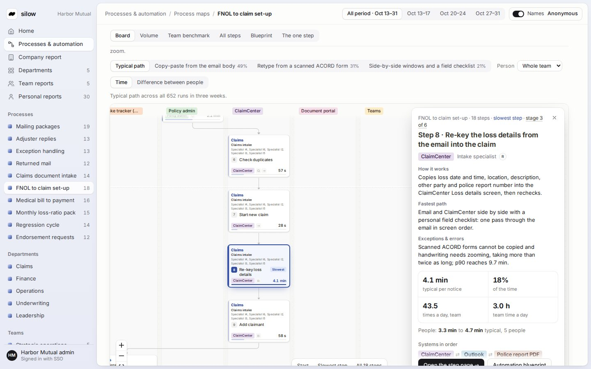
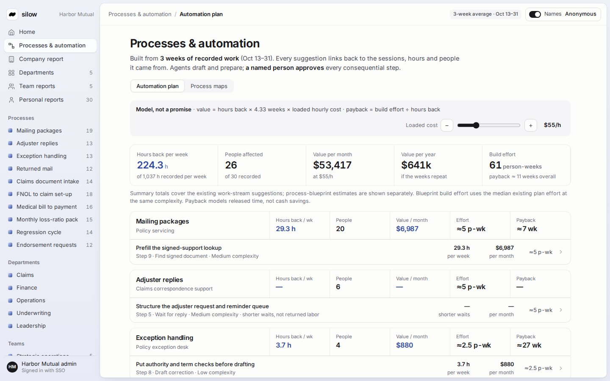
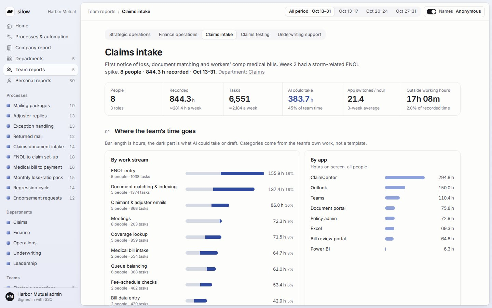

See which step
is costing you the time.
Silow records how work runs across your apps and shows what to automate first.
First month free.
Screens become data. Data becomes any report.





Company report: where every team’s hours go.
5 teams, 30 people, 3,112 hours in three weeks. 42% is work AI could take or draft. Leadership uses it to choose where to start.
Team report: what one team’s week is made of.
Claims intake, 8 people: work streams, apps and handoffs. 45% of the team’s time an agent could take. For the team’s manager.
Process map: one process, step by step.
Built from recordings of 652 FNOL notices: 18 steps, 6 systems, 26 minutes a notice. The slowest step is flagged: re-keying loss details.
Build plan: a card for every process.
Every mapped process and opportunity gets one: what gets built, in which systems, hours back, who approves. This one: FNOL emails into claim drafts, 36.4 h back a week.
Your data stays under your control.
Leadership sees company and team reports, managers their own teams. Names are anonymous by default.
Our servers or yours.
Workflows with medical records run entirely on your servers, supporting your HIPAA requirements.
Pick a team.
Start the free month.
20–30 people and one process you care about. Readout in week four.